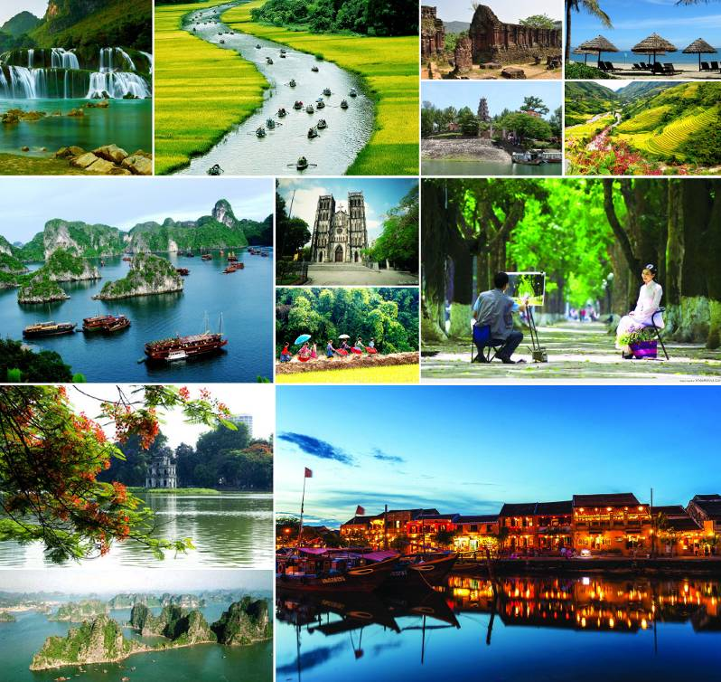

Giới thiệu
Du lịch Việt Nam được Nhà nước Việt Nam xem là một ngành kinh tế mũi nhọn vì cho rằng đất nước Việt Nam có tiềm năng du lịch đa dạng và phong phú. Năm 2019, ngành Du lịch Việt Nam lập kỳ tích lần đầu tiên đón 18 triệu lượt khách quốc tế, tăng 16,2% so với năm 2018. Giai đoạn từ 2015-2019, lượng khách quốc tế đến Việt Nam đã tăng 2,3 lần từ 7,9 triệu lượt lên 18 triệu lượt, tốc độ tăng trưởng bình quân đạt 22,7% mỗi năm. Việt Nam liên tục nằm trong nhóm những quốc gia có tốc độ tăng trưởng khách du lịch nhanh nhất thế giới. Năm 2019, du lịch Việt Nam nhận giải thưởng Điểm đến di sản hàng đầu thế giới do World Travel Awards trao tặng, Điểm đến Golf tốt nhất thế giới do World Golf Awards trao tặng. Cùng với đó, World Travel Awards cũng vinh danh Việt Nam là Điểm đến hàng đầu châu Á 2 năm liên tiếp 2018-2019, Điểm đến văn hóa hàng đầu châu Á 2019, Điểm đến ẩm thực hàng đầu châu Á 2019.
Tuy nhiên, ngành du lịch Việt Nam có những hạn chế như tỷ lệ khách quay trở lại thấp (10-40%). Chi tiêu của khách du lịch quốc tế tại Việt Nam không cao, trung bình hơn 1.000 USD cho một chuyến 9 ngày do sản phẩm du lịch của Việt Nam chưa hấp dẫn, thiếu gắn kết, các hoạt động giải trí, mua sắm, chăm sóc khách chưa đa dạng, công tác xúc tiến quảng bá chưa thực sự hiệu quả do hạn chế về nguồn lực, cơ chế vận hành, chưa thành lập Văn phòng xúc tiến du lịch ở nước ngoài, Quỹ hỗ trợ và phát triển du lịch chưa được vận hành và đi vào hoạt động; hạ tầng sân bay có xu hướng quá tải, chưa đáp ứng được tốc độ tăng trưởng cao về số lượng khách du lịch; chính sách thị thực nhập cảnh còn hạn chế so với các điểm đến cạnh tranh trực tiếp của du lịch Việt Nam như Thái Lan.
Hiện nay Việt Nam có 33 vườn quốc gia gồm Ba Bể, Bái Tử Long, Hoàng Liên, Tam Đảo, Xuân Sơn, Ba Vì, Cát Bà, Cúc Phương, Xuân Thủy, Bạch Mã, Bến En, Phong Nha-Kẻ Bàng, Pù Mát, Vũ Quang, Bidoup Núi Bà, Chư Mom Ray, Chư Yang Sin, Kon Ka Kinh, Yok Đôn, Côn Đảo, Lò Gò-Xa Mát, Mũi Cà Mau, Núi Chúa, Phú Quốc, Phước Bình, Tràm Chim, U Minh Hạ, U Minh Thượng, Tà Đùng.
Việt Nam có 400 nguồn nước nóng từ 40-120 độ. Nhiều suối có hạ tầng xây dựng khá tốt như: Suối nước nóng thiên nhiên Đam Rông, Lâm Đồng; suối nước nóng Kim Bôi Hòa Bình, suối nước nóng Bình Châu Bà Rịa-Vũng Tàu, suối nước nóng Kênh Gà, Ninh Bình, suối nước nóng Quang Hanh Quảng Ninh, suối nước nóng Thanh Thủy - Phú Thọ.
Hang động Việt Nam chủ yếu nằm ở nửa phía bắc của đất nước này do tập trung nhiều dãy núi đá vôi. Hệ thống hang động ở Việt Nam thường là các hang động nằm trong các vùng núi đá vôi có kiểu địa hình karst rất phát triển. Ba di sản thiên nhiên thế giới của Việt Nam là vịnh Hạ Long, Vườn quốc gia Phong Nha - Kẻ Bàng và quần thể danh thắng Tràng An đều là những danh thắng có những hang động nổi tiếng. Cho tới năm 2010 chỉ riêng ở Quảng Bình đã thống kê được 300 hang động thuộc Vườn quốc gia Phong Nha - Kẻ Bàng. Tỉnh Ninh Bình có 400 hang động trong đó hơn 100 hang động tập trung nhiều ở quần thể di sản thế giới Tràng An - Tam Cốc - Bích Động.[18] Hiện nay tổng số hang động ở Việt Nam được phát hiện lên tới gần 1000 hang động. Các hang động ở Việt Nam tuy nhiều nhưng số được khai thác sử dụng cho mục đích du lịch còn rất ít. Tiêu biểu nhất là: động Phong Nha (Quảng Bình), động Hương Tích (Hà Nội), hang động Tràng An, Tam Cốc - Bích Động, động Địch Lộng, động Vân Trình, động Thiên Hà (Ninh Bình), hang Pác Bó (Cao Bằng), động Tam Thanh (Lạng Sơn), động Sơn Mộc Hương (Sơn La), các hang động ở vịnh Hạ Long (Quảng Ninh)...
Doanh thu du lịch các tỉnh thành Việt Nam năm 2022, đơn vị tính Tỷ Việt Nam Đồng. Số liệu chỉ mang tính ước tính có tính chất tham khảo
Việt Nam đứng thứ 27 trong số 156 quốc gia có biển trên thế giới với 125 bãi tắm biển, hầu hết là các bãi tắm đẹp. Việt Nam là 1/12 quốc gia có vịnh đẹp nhất thế giới là vịnh Hạ Long và vịnh Nha Trang.
Tính đến năm 2003 Việt Nam có khoảng 3500 hồ chứa có dung tích lớn hơn 0.2 triệu m3. Chỉ có 1976 hồ có dung tích lớn hơn 1 triệu m3, chiếm 55,9% với tổng dung tích 24.8 tỷ m3. Trong số hồ trên có 10 hồ do ngành điện quản lý với tổng dung tích 19 tỷ m3. Có 44 tỉnh và thành phố trong 63 tỉnh thành Việt Nam có hồ chứa. Tỉnh có nhiều hồ nhất là Nghệ An (249 hồ), Hà Tĩnh (166 hồ), Thanh Hóa (123 hồ), Phú Thọ (118 hồ), Đắk Lắk (116 hồ) và Bình Định (108 hồ). Một số hồ nổi tiếng ở Việt Nam đã được khai thác du lịch như: Hồ Tây, hồ Hoàn Kiếm, hồ Đại Lải, hồ Quan Sơn, hồ Suối Hai (Hà Nội); Hồ Ba Bể (Bắc Kạn); Hồ Cấm Sơn (Bắc Giang); Hồ Đồng Chương, hồ Đồng Thái, hồ Yên Thắng, hồ Mạc (Ninh Bình); hồ Tuyền Lâm, hồ Than Thở (Đà Lạt),...
Danh hiệu UNESCO ở Việt Nam gồm danh sách các di sản thế giới, khu dự trữ sinh quyển thế giới, di sản tư liệu thế giới, công viên địa chất toàn cầu, di sản văn hóa phi vật thể của nhân loại... đã được UNESCO công nhận tại Việt Nam. Trong hệ thống các danh hiệu của UNESCO, di sản thế giới là danh hiệu danh giá nhất và lâu đời nhất.[20] Thủ đô Hà Nội hiện sở hữu nhiều danh hiệu UNESCO trao tặng nhất cho các đối tượng: Hoàng thành Thăng Long, Bia tiến sĩ Văn Miếu Thăng Long, ca trù, Hội Gióng, Kéo Co và Tín ngưỡng thờ Mẫu Việt Nam. Đến năm 2019, các tỉnh sở hữu từ ba loại danh hiệu UNESCO khác nhau trở lên là: Ninh Bình, Quảng Nam, Lâm Đồng và Hà Nội; Các tỉnh Bắc Kạn, Điện Biên, Lai Châu, Sơn La, Thái Nguyên chưa từng sở hữu một danh hiệu UNESCO nào.
Tới năm 2017, có 8 di sản được UNESCO công nhận là Di sản thế giới tại Việt Nam[21] bao gồm: Quần thể danh thắng Tràng An, Thành nhà Hồ, Hoàng thành Thăng Long, Quần thể di tích Cố đô Huế, Vịnh Hạ Long, Phố Cổ Hội An, Thánh địa Mỹ Sơn, và Vườn Quốc gia Phong Nha - Kẻ Bàng. Các di sản thế giới hiện đều là những điểm du lịch hấp dẫn.
Tính đến hết năm 2019 Việt Nam được UNESCO công nhận 9 khu dự trữ sinh quyển thế giới đó là Châu thổ sông Hồng, Cát Bà, Tây Nghệ An, Đồng Nai, Cù lao Chàm, Cần Giờ. Cà Mau, biển Kiên Giang và Khu dự trữ sinh quyển Langbian.
Có 13 di sản văn hóa phi vật thể trên thế giới tại Việt Nam như Nhã nhạc cung đình Huế, Không gian văn hóa Cồng Chiêng Tây Nguyên, Quan họ, Ca trù, Hội Gióng, Hát xoan, Tín ngưỡng thờ cúng Hùng Vương, Tín ngưỡng thờ Mẫu, Đờn ca tài tử, Kéo co, Nghệ thuật Bài Chòi, Thực hành then Tày - Nùng - Thái.
Ngày 21/09/2017, Chính phủ đã ban hành Nghị định 109/2017/NĐ-CP quy định về bảo vệ và quản lý Di sản văn hóa và thiên nhiên thế giới ở Việt Nam. Tại Nghị định 109 giải thích: Di sản văn hóa và thiên nhiên thế giới (sau đây gọi chung là di sản thế giới) là di tích lịch sử - văn hóa, danh lam thắng cảnh tiêu biểu của Việt Nam có giá trị nổi bật toàn cầu về văn hóa và thiên nhiên, được Tổ chức Giáo dục, Khoa học và Văn hóa của Liên hợp quốc (sau đây gọi chung là UNESCO) ghi vào Danh mục Di sản thế giới..
| Năm | Địa phương đăng cai | Chủ đề | Mục đích |
|---|---|---|---|
| 2003 | Quảng Ninh | Non nước hữu tình | |
| 2004 | Điện Biên | Hào hùng chiến khu | |
| 2005 | Nghệ An | Theo chân Bác | |
| 2006 | Quảng Nam | Một điểm đến - hai di sản văn hóa thế giới | |
| 2007 | Thái Nguyên | Về thủ đô gió ngàn - Chiến khu Việt Bắc. | |
| 2008 | Cần Thơ và các tỉnh Đồng bằng Sông Cửu Long | Miệt vườn sông nước Cửu Long | |
| 2009 | Đắk Lắk | Hủy bỏ vì địa phương đăng cai rút lui | |
| 2010 | Hà Nội | Thăng Long – Hà Nội, hội tụ ngàn năm | chào mừng sự kiện 1000 năm Thăng Long – Hà Nội |
| 2011 | Phú Yên và các tỉnh duyên hải Nam Trung Bộ | Du lịch biển – đảo | Khẳng định chủ quyền và quảng bá biển, đảo Việt Nam |
| 2012 | Thừa Thiên Huế và các tỉnh duyên hải Bắc Trung Bộ | Du lịch di sản | Kèm tổ chức Festival Huế |
| 2013 | Hải Phòng và các tỉnh đồng bằng Sông Hồng | Văn minh Sông Hồng | |
| 2014 | Lâm Đồng và các tỉnh Tây Nguyên | Đại ngàn Tây Nguyên | Khơi dậy, kết nối phát huy thế mạnh du lịch của các tỉnh Tây Nguyên |
| 2015 | Thanh Hóa | Kết nối các di sản thế giới | Nâng cao nhận thức của các cấp, các ngành và của nhân dân về sự phát triển du lịch gắn với bảo tồn và phát huy các giá trị văn hóa |
| 2016 | Phú Quốc - Đồng bằng sông Cửu Long | Khám phá đất phương Nam | |
| 2017 | Tây Bắc - Lào Cai | Sắc màu Tây Bắc | Đây là lần thứ 2 Tây Bắc Bộ đăng cai sự kiện này. Trước đó 13 năm, Điện Biên cũng đã đăng cai là vào năm 2004 |
| 2018 | Quảng Ninh | Hạ Long – Di sản, Kỳ quan – Điểm đến thân thiện | Đây là lần thứ 2 Quảng Ninh đăng cai sự kiện này. Trước đó 15 năm, tỉnh này cũng đã đăng cai là vào năm 2003 |
| 2019 | Khánh Hòa | Nha Trang - Sắc màu của biển | Năm Du lịch quốc gia 2019 nhấn mạnh vào du lịch biển đảo, đây là sản phẩm đặc trưng, chiến lược của du lịch Việt Nam cũng như của Khánh Hòa. |
| 2020 | Ninh Bình | Hoa Lư - Cố đô ngàn năm | Năm du lịch quốc gia 2020 có phần lớn các sự kiện bị hủy hoặc hoãn sang năm 2021 do dịch Covid-19. |
| 2021 | Ninh Bình | Hoa Lư - Cố đô ngàn năm | Năm du lịch quốc gia 2021 quảng bá các giá trị di sản văn hóa vật thể, phi vật thể, tài nguyên và sản phẩm đặc sắc của du lịch Ninh Bình. |
| 2022 | Quảng Nam | Quảng Nam - Điểm đến du lịch xanh | Tổ chức Năm Du lịch Quốc gia - Quảng Nam 2022 là cơ hội để ngành du lịch phục hồi và phát triển trong tình hình mới, đồng thời góp phần nâng cao hình ảnh, vị thế, thương hiệu du lịch Việt Nam nói chung và tỉnh Quảng Nam nói riêng trong những năm tiếp theo |
| 2023 | Bình Thuận | Bình Thuận - Hội tụ xanh | Các hoạt động hướng đến sản phẩm xanh, năng lượng sạch, tạo ra môi trường thân thiện và an toàn đến sức khỏe, bảo tồn và phát huy các di sản văn hóa và các giá trị truyền thống tốt đẹp của dân tộc; hướng đến một nền tăng trưởng xanh, phát triển du lịch bền vững |
| 2024 | Điện Biên | Vinh quang Điện Biên Phủ - Trải nghiệm bất tận | Gắn với kỷ niệm 70 năm Chiến thắng Điện Biên Phủ |
Nguồn: Wikipedia
Quay về trang chủ